oomph-lib's block preconditioning framework provides an environment for the development of block preconditioners for the iterative solution of linear systems by Krylov subspace methods. The framework is based on the classification of the problem's unknowns (degrees of freedom; here abbreviated as dofs) into different "dof types" which, in a multi-physics context, typically represent different physical quantities. A key feature of the framework is that it allows existing block preconditioners (which were developed for a particular single-physics application, say) to be re-used, in a hierarchical fashion, in block preconditioners for related multi-physics problems. This means that existing Navier-Stokes and solid mechanics preconditioners can be used to create preconditioners for fluid-structure interaction problems, say.
Following a brief overview of the underlying ideas and their implementation in oomph-lib this tutorial discusses a sequence of increasingly complex block preconditioners that illustrate the framework's capabilities in the context of a (rather artificial) model problem. The final example illustrates a simple implementation of a block preconditioner for an FSI problem. We conclude with a few comments on the use of block preconditioners in parallel. Other tutorials discuss how the methodology is used in "real" preconditioners. See, for instance, the tutorials discussing
oomph-lib's"general purpose" block preconditioners.
- The NavierStokesSchurComplementPreconditioner for Navier-Stokes problems
- The FSIPreconditioner for monolithically-discretised fluid-structure interaction problems.
- The preconditioner for large-displacement solid mechanics problems in which boundary displacements are prescribed.
- The previous preconditioner is mainly used as a subsidiary block preconditioner for the solution of fluid-structure interaction problems with (pseudo-)solid fluid mesh updates.
Theoretical background
In oomph-lib, all problems are solved by Newton's method, which requires the repeated solution of linear systems of the form
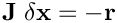
for the Newton correction  where 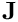 is the Jacobian matrix and
where 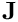 is the Jacobian matrix and  is the vector of residuals. (Left) preconditioning represents a transformation of the original linear system to
is the vector of residuals. (Left) preconditioning represents a transformation of the original linear system to
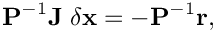
introduced with the aim of accelerating the convergence of Krylov subspace solvers such as GMRES or CG. The application of the preconditioner requires the solution of
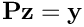
for 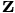 at each Krylov iteration.
Block preconditioners are based (at least formally) on a reordering of the linear system such that related unknowns (e.g. dofs representing the same physical quantity) are grouped together and enumerated consecutively.
For instance, in linear elasticity problems (discussed in another tutorial) where we compute the displacement field of an elastic body in response to an applied traction, the (discrete) unknowns can be sub-divided according to which component of the displacement vector they represent. Using this classification of the dofs, the re-ordered linear system for a two-dimensional problem then has the form
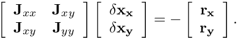
A simple (and, in fact, quite effective) block preconditioner for this linear system can be formed by retaining only the diagonal blocks of the system matrix, leading to the block diagonal preconditioner
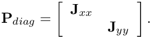
The application of this preconditioner requires the solution of the linear system
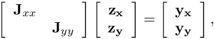
which requires the (exact or approximate) solution of the two smaller linear systems  and 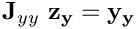.
and 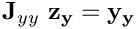.
Overview
The above example shows that the application of block preconditioners typically require several generic steps:
- The classification of the dofs.
- The application of subsidiary preconditioning operations such as the solution of (smaller) linear systems or the evaluation of matrix-vector products with some of the blocks that are extracted from the original linear system.
The following subsections describe how these tasks are performed within oomph-lib's block preconditioning framework.
The classification of dof types via block preconditionable elements
The classification of dofs is specified by the elements since they are the only objects within oomph-lib's data structure that "know" what role a specific dof plays in "their" equations. During the setup phase, the block preconditioner loops over "all
elements" (specified via one or more Meshes – here simply used as containers for elements; see below for further details) to establish the "dof type" for each global unknown.
To achieve this, the class GeneralisedElement contains two broken virtual methods that must be re-implemented/overloaded to label each of the element's dofs with its type. These methods are:
GeneralisedElement::ndof_types()must return the number of dof types associated with an element.GeneralisedElement::get_dof_numbers_for_unknowns(...)must return a list of pairs comprising a map from global equation number to dof type for all unknowns in the element.
These are already implemented for many elements. If not, the functions are easy to write. For instance, oomph-lib's DIM-dimensional linear elasticity elements from the QLinearElasticityElement family can be made block-preconditionable by using the following wrapper class:
Thus, in the two-dimensional MyLinearElasticityElement<2> we have two types of dofs, corresponding to the displacements in the  and
and  directions, respectively. They are enumerated as dof types 0 and 1, respectively.
directions, respectively. They are enumerated as dof types 0 and 1, respectively.
dof types, blocks, compound blocks and meshes
In the block diagonal preconditioner for the two-dimensional linear elasticity problem, discussed above, we have dof types that correspond directly to the blocks in the (re-ordered) Jacobian matrix. However, as we will demonstrate below, it is also possible to combine the blocks associated with multiple dofs into a single (compound) block in which case the number of blocks is smaller than the number of dof types. The relationship between dof types, block types, the elemental dof type classification and meshes are as follows
- Elemental dof type classification: Each element classifies its own dof types in the function
get_dof_numbers_for_unknowns(...). In the case of the two-dimensionalMyLinearElasticityElement<2>elements, the dof types are classified as0and1; for two-dimensionalQTaylorHoodElement<2>Navier-Stokes elements, the dof types are classified as0and1for the and
and  -velocities, and
-velocities, and 2for the pressure ; etc.
; etc.
- Role of meshes: When classifying the degrees of freedom into dof types, the block preconditioning framework visits all elements that make contributions to the Jacobian matrix and associates the global equation number of each dof with the dof type specified by the element. The block preconditioning framework is given access to the elements via (possibly multiple) meshes (here simply interpreted as containers for elements), each of which is assumed to contain elements of a single type. The total number of dof types in the block preconditioner is the sum of the dof types of the elements in the meshes. For instance, in a 2D fluid-structure interaction problem we have two different element types, the solid elements (which contain the and
 solid displacements, 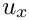 and 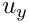, respectively, assumed to be enumerated as dof types 0 and 1 by these elements) and the fluid elements (which contain the - and - fluid velocities, 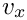 and 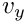 , and the pressure, , assumed to be enumerated as dof types 0, 1 and 2 by these elements). Assuming the mesh of solid elements is specified as mesh 0 and the mesh of fluid elements is mesh 1, the block preconditioner has a total of five dof types which represent, in order, 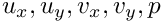. Note that if certain degrees of freedom are classified by multiple elements, the most recent assignment of the dof type over-writes previous assignments. The order in which meshes are specified therefore matters.
solid displacements, 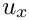 and 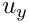, respectively, assumed to be enumerated as dof types 0 and 1 by these elements) and the fluid elements (which contain the - and - fluid velocities, 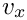 and 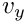 , and the pressure, , assumed to be enumerated as dof types 0, 1 and 2 by these elements). Assuming the mesh of solid elements is specified as mesh 0 and the mesh of fluid elements is mesh 1, the block preconditioner has a total of five dof types which represent, in order, 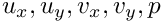. Note that if certain degrees of freedom are classified by multiple elements, the most recent assignment of the dof type over-writes previous assignments. The order in which meshes are specified therefore matters.
A corollary to this is that a block preconditioner does not need to "know" about elements that do not introduce any new unknowns. For instance,FaceElementsthat apply Neumann/flux boundary conditions operate on dofs that are already contained in (and therefore classified by) the elements in the "bulk" mesh. Conversely, if aFaceElementimposes a boundary condition via Lagrange-multipliers, the dofs that represent these Lagrange multipliers must be classified by theFaceElementssince the "bulk elements" are not aware of them.
Ifoomph-libis compiled with thePARANOIDflag, an error is thrown if any of the global unknowns are not associated with a dof type.
- Blocks: The blocks are the sub-blocks of the system matrix (usually the Jacobian matrix from the Newton method) that the block preconditioner works with. By default, each block is associated with exactly one dof type. However, it is possible create "compound blocks" that are associated with more than one dof type. For example, in the Navier-Stokes LSC preconditioner (in 2D) we have three dof types (the and
 -velocities and the pressure), but the preconditioner works with just two block types (forming the velocity and pressure blocks). The setup of the block types is handled by the function
-velocities and the pressure), but the preconditioner works with just two block types (forming the velocity and pressure blocks). The setup of the block types is handled by the function block_setup(...)discussed below.
Simple preconditioner examples
We will now illustrate the capabilities of the block preconditioning framework by considering the system of  coupled PDEs
coupled PDEs
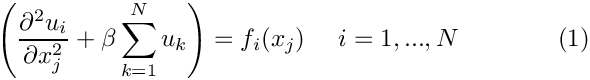
for the fields 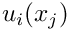. If  , the system represents (uncoupled) Poisson equations, each with their own source function
, the system represents (uncoupled) Poisson equations, each with their own source function  If 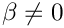 the PDE for is affected by all other fields via the Helmholtz-like second term on the left-hand-side.
If 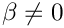 the PDE for is affected by all other fields via the Helmholtz-like second term on the left-hand-side.
The MultiPoissonElements discretise the equations with standard Galerkin-type finite elements in which each field is treated as its own dof type. If 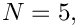 the linear system to be solved in the course of the Newton method,
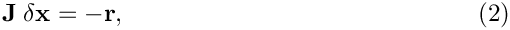
has a 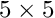 block structure implying that, following a formal re-numbering of the unknowns, the matrix and the vectors can be written as
![\[
\hspace{3cm}
{\bf J} =
\left(
\begin{array}{ccccc}
J_{11} & J_{12} & J_{13} & J_{14} & J_{15} \\
J_{21} & J_{22} & J_{23} & J_{24} & J_{25} \\
J_{31} & J_{32} & J_{33} & J_{34} & J_{35} \\
J_{41} & J_{42} & J_{43} & J_{44} & J_{45} \\
J_{51} & J_{52} & J_{53} & J_{54} & J_{55} \\
\end{array}
\right),
\ \
\delta {\bf x} =
\left(
\begin{array}{c}
\delta x_{1} \\
\delta x_{2} \\
\delta x_{3} \\
\delta x_{4} \\
\delta x_{5} \\
\end{array}
\right)
\ \mbox{ and } \
{\bf r} =
\left(
\begin{array}{c}
r_{1} \\
r_{2} \\
r_{3} \\
r_{4} \\
r_{5} \\
\end{array}
\right).
\hspace{3cm}
(3)
\]](form_33.png)
We wish to solve this linear system by preconditioned Krylov subspace methods, using a block preconditioner 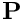 formed (formally) from the blocks of the system matrix  . As discussed above, the application of the preconditioner (typically once per iteration of the Krylov solver) then requires the solution of linear systems of the form
. As discussed above, the application of the preconditioner (typically once per iteration of the Krylov solver) then requires the solution of linear systems of the form  for
for  . The preconditioning operation can also be written as 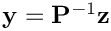 where the operator 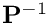 represents the application of the preconditioner to a vector
. The preconditioning operation can also be written as 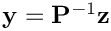 where the operator 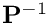 represents the application of the preconditioner to a vector  . Formally, the operator represents the inverse of the matrix but its application may, of course, be performed
. Formally, the operator represents the inverse of the matrix but its application may, of course, be performed
approximately by another subsidiary'' preconditioner/inexact solver e.g. by performing a small number of multigrid cycles, say. (Note that we sayformally'' because the preconditioner does not actually have to be associated with a specific matrix – it simply has to act as a linear operator that `‘turns into ’').
A specific block preconditioner must be derived from the BlockPreconditioner base class and must implement two pure virtual member functions of the underlying Preconditioner class:
voidPreconditioner::setup(): This function is called once during the solution of a given linear system by any ofoomph-lib's Krylov subspace solvers. It typically extracts a certain number of blocks from the matrix , possibly manipulates its local copies of these blocks, and performs any preliminary computations required to allow the rapid subsequent application of .voidPreconditioner::preconditioner_solve( , ): This function applies to the input argument and computes , typically using some data that has been pre-computed in the
): This function applies to the input argument and computes , typically using some data that has been pre-computed in the setup()function.
To allow a block preconditioner to classify all dofs, the preconditioner must be given access to all elements that contribute to the linear system to be solved. This is done by specifying pointers to these elements via one or more Mesh objects (which simply act as containers for the element pointers), using the functions set_nmesh(...) (which specifies how many meshes the preconditioner works with) and set_mesh(...).
We will discuss the implementation of the required functions (and associated capabilities of the block preconditioning framework) in a number of increasingly complex block preconditioners for the solution of the linear system defined by equations (2) and (3). We stress that the purpose of this exercise is not the development of particularly clever preconditioners but simply an excuse to demonstrate the use of the available `‘machinery’'. Specifically we will demonstrate how to:
- extract selected blocks from the system matrix (usually the Jacobian matrix assembled by the Newton solver).
- perform matrix vector products with selected off-diagonal blocks.
- solve linear systems associated with selected blocks, using either a direct solver and/or subsidiary preconditioners (inexact solvers), including cases where the subsidiary preconditioners are block preconditioners themselves.
- replace and modify selected blocks and how to make such modified blocks available to subsidiary block preconditioners.
- concatenate and coarsen blocks.
A block diagonal preconditioner
NEW FEATURES: How to extract matrix blocks and corresponding block vectors from their full-size counterparts
Theory
The simplest possible block preconditioner is a block-diagonal preconditioner, formed by retaining only the diagonal blocks of , so that
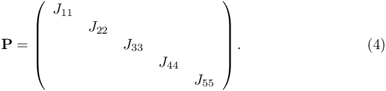
The application of this preconditioner (i.e. the solution of the linear system  for ) requires the solution of the five much smaller linear systems
for ) requires the solution of the five much smaller linear systems
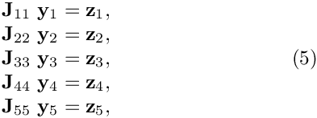
where we have assumed that the two vectors and are re-ordered into block vectors'' in the same way as the vectors \f$\delta {\bf x}\f$ and \f${\bf r}\f$ in "the original linear system" (2) are re-ordered into theblock vectors'' in (3).
The implementation of the preconditioning operations in (5) can naturally be subdivided into two distinct setup() and preconditioner_solve(...) phases. Assuming that the linear systems in (5) are solved exactly by a direct solver (an `‘exact preconditioner’') that can pre-compute and store the LU decomposition of the diagonal matrix blocks, the setup() phase involves the following operations [text in square brackets refers to their oomph-lib -specific implementation]:
- Set up any data structures/lookup tables that are required to extract matrix blocks from the original matrix [by calling the
BlockPreconditioner::block_setup()function]. - Extract the five diagonal blocks 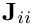 (for 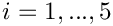) [using the
BlockPreconditioner::get_block(...)function]. - Compute and store the LU decomposition of the diagonal blocks to allow the rapid solution of the systems 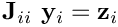 (for ) during the
preconditioner_solve(...)phase by back-substitution. [This is done by calling thesetup(...)function of the subsidiary preconditioner/inexact solver. Following this, the diagonal matrix blocks are longer required and can be deleted.]
Once the setup() phase has been completed, the solution of the linear system 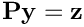 by the preconditioner_solve(...) function involves the following steps:
- Extract the five
block vectors'' \f${\bf z}_i\f$ (for \f$i=1,...,5\f$) from the vector \f${\bf z}\f$ [using the \c BlockPreconditioner::get\_block\_vectors(...) function]. Solve the linear systems \f${\bf J}_{ii} \ {\bf y}_i = {\bf z}_i\f$ for the vectors \f${\bf y}_i\f$ (for \f$i=1,...,5\f$) using the precomputed LU decomposition of the diagonal blocks \f${\bf J}_{ii}\f$ (for \f$i=1,...,5\f$) created during the \c setup() phase.Combine the fiveblock vectors'' 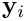 (for ) to the full-length vector [using the BlockPreconditioner::return_block_vectors(...)function].
Implementation as a BlockPreconditioner
Here is a sample implementation of the diagonal block preconditioner as a class Diagonal, derived from the BlockPreconditioner base class. The class provides storage for the subsidiary preconditioners that solve the linear systems associated with the diagonal blocks, implements the setup() and preconditioner_solve(...) functions, and provides a helper function clean_up_my_memory() which does what it says. We also provide an access function which allows the user to specify the pointer to the Mesh that contains the MultiPoissonElements which classify the dofs.
The setup() function
As mentioned above, a Preconditioner's setup() function is called at the beginning of the IterativeLinearSolver's solve(...) function. In time-dependent and/or nonlinear problems many (different) linear systems have to be solved by the same linear solver (and the associated preconditioner) throughout the code execution. To avoid memory leaks it is therefore important to free up any memory that may have been allocated in any previous use of the preconditioner. The setup() function of all block preconditioner should therefore always start by freeing up such memory. This is best done by using a helper function that can also be called from the destructor.
Next we set the pointer to the preconditioner's one-and-only mesh, and call the block_setup() function to set up the internal data structures and lookup tables required to extract blocks from the system matrix.
We create five subsidiary preconditioners (all exact solvers – SuperLU in its incarnation as an "exact" preconditioner) for the solution of the linear systems involving the diagonal blocks:
Next we set up the subsidiary preconditioner by extracting the diagonal blocks from the system matrix and passing them to the subsidiary preconditioners.
Note that each preconditioner is expected to retain a copy of whatever data it needs to subsequently perform its preconditioner_solve(...) function. The deep copy of the block that is returned by the get_block(...) function can therefore be deleted (here simply go out of scope) once the subsidiary preconditioner has been set up. (In the specific case of the SuperLUPreconditioner, the setup(...) function computes and stores the LU decomposition of the matrix; the matrix itself is then no longer required).
The preconditioner_solve() function
To apply the preconditioner to a given vector, r, we first extract the five block-vectors whose sizes (and permutations) match that of the diagonal matrix blocks, using the get_block_vectors(...) function.
We then provide storage for the five solution vectors and compute them by applying the subsidiary preconditioners' preconditioner_solve(...) function:
Finally the solutions in block_z are returned into the full-length solution vector z via a call to return_block_vectors(...).
The clean_up_my_memory() function
This function (which is called by the setup() function and the destructor) frees the memory that is allocated when a new linear system is solved – here the subsidiary preconditioners and their associated data (the LU decompositions of the diagonal blocks).
Comments and Exercises
Thefunctionget_block_vectors(r,block_r)extracts the five (or, in general,nblock_type()) block vectorsblock_rfrom the full-length vectorr. The sizes of the block vectors (and the permutation of their entries relative to their order in the full length vectorr) match that of the matrix blocks. There is an alternative functionget_block_vector(...)(note the missing s) which extracts a single block vector. An equivalent version exists for thereturn_block_vector[s] functions.- In the example above we used an "exact preconditioner" (direct solver) to solve the five linear systems associated with the diagonal blocks. However, the (approximate) solution of these linear systems can be performed by any other matrix-based preconditioner, such as
oomph-lib'sdiagonal preconditioner,MatrixBasedDiagPreconditioner, discussed in another tutorial. The setup and application of this preconditioner is obviously much faster than for theSuperLUPreconditioner. Its setup merely requires the extraction of the diagonal entries and storage of their inverses (rather than the computation of the LU decomposition), while the application simply requires the multiplication of the input vector by the pre-computed inverses of the diagonal entries (rather than a back-substitution). However, the preconditioner is clearly not "as good" and therefore results in a larger number of iterations in the iterative linear solver. In fact, using the diagonal preconditioner for the approximate solution of the five linear systems involving the diagonal blocks is mathematically equivalent to using the diagonal preconditioner on the entire matrix. Try it out!
A block upper triangular preconditioner
NEW FEATURES: How to set up matrix vector products with off-diagonal blocks
Theory
Next we consider the implementation of an upper triangular preconditioner, formed by retaining only the blocks in the upper right hand part of , including the diagonals.
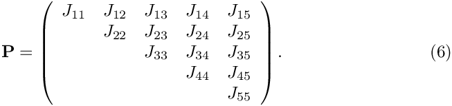
The application of this preconditioner (i.e. the solution of the linear system for ) again requires the solution of five much smaller linear systems
![\[
\hspace{3cm}
\begin{array}{l}
{\bf J}_{11} \ {\bf y}_1 = \widetilde{\bf z}_1 = {\bf z}_1 - {\bf J}_{15} \ {\bf y}_5 - {\bf J}_{14} \ {\bf y}_4 - {\bf J}_{13} \ {\bf y}_3 - {\bf J}_{12} \ {\bf y}_2, \\
{\bf J}_{22} \ {\bf y}_2 = \widetilde{\bf z}_2 = {\bf z}_2 - {\bf J}_{25} \ {\bf y}_5 - {\bf J}_{24} \ {\bf y}_4 - {\bf J}_{23} \ {\bf y}_3, \\
{\bf J}_{33} \ {\bf y}_3 = \widetilde{\bf z}_3 ={\bf z}_3 - {\bf J}_{35} \ {\bf y}_5 - {\bf J}_{34} \ {\bf y}_4, \\
{\bf J}_{44} \ {\bf y}_4 = \widetilde{\bf z}_4 ={\bf z}_4 - {\bf J}_{45} \ {\bf y}_5, \\
{\bf J}_{55} \ {\bf y}_5 = \widetilde{\bf z}_5 = {\bf z}_5, \\
\end{array}
\hspace{3cm}
(7)
\]](form_52.png)
where we have again assumed that the two vectors and are re-ordered into block vectors'' in the same way as the vectors \f$\delta {\bf x}\f$ and \f${\bf r}\f$ in "the original linear system" (2) are re-ordered into theblock vectors'' in (3).
The main difference to the block diagonal preconditioner considered before is that the right hand sides of the linear systems have to be modified. We start by solving the final equation for 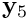. We then multiply this vector by the off-diagonal block 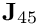, subtract the result from 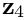 and use the result of this operation as the right-hand-side for the linear system that determines 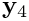, etc.
The implementation of the preconditioning operations in (7) can again be subdivided into two distinct setup() and preconditioner_solve(...) phases. Assuming that the linear systems in (7) are solved exactly by a direct solver (an `‘exact preconditioner’') that can pre-compute and store the LU decomposition of the diagonal matrix blocks, the setup() phase involves the following operations [text in square brackets refers to their oomph-lib specific implementation]:
- Set up any data structures/lookup tables that are required to extract matrix blocks from the original matrix [by calling the
BlockPreconditioner::block_setup()function]. - Extract the five diagonal blocks (for ) [using the
BlockPreconditioner::get_block(...)function]. - Compute and store the LU decomposition of the diagonal blocks to allow the rapid solution of the systems 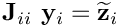 (for ) during the
preconditioner_solve(...)phase by back-substitution. [This is done by calling thesetup(...)function of the subsidiary preconditioner/inexact solver. Following this, the diagonal matrix blocks are longer required and can be deleted.] - Extract the relevant off-diagonal blocks from and create
MatrixVectorProductoperators. [The matrix vector products are set up using thesetup_matrix_vector_product(...)function. As with the subsidiary preconditioners, theMatrixVectorProductoperators retain their own copy of any required data, so the off-diagonal matrix blocks can be deleted (or be allowed to go out of scope) following the setup.]
Implementation as a BlockPreconditioner
Here is a sample implementation of the upper triangular block preconditioner as a class UpperTriangular, derived from the BlockPreconditioner base class. The class provides storage for the subsidiary preconditioners that solve the linear systems associated with the diagonal blocks, and the MatrixVectorProduct operators. We also implement the setup() and preconditioner_solve(...) functions, and provide a helper function clean_up_my_memory() which does what it says. As before we also provide an access function which allows the user to specify the pointer to the Mesh that contains the MultiPoissonElements which classify the dofs.
The setup() function
As before, we start by cleaning up the memory, set the pointer to the mesh, and set up the generic block preconditioner functionality by calling block_setup().
We provide storage for the (pointers to the) matrix vector products and the subsidiary preconditioners.
Next we create the subsidiary preconditioners which we will use to solve the linear systems involving the diagonal blocks.
We then extract the relevant off-diagonal blocks (those above the diagonal) from the full matrix, create a MatrixVectorProduct operator for each and use the BlockPreconditioner::setup_matrix_vector_product(...) function to make them fully functional. Note that the final argument to this function (the column index of the off-diagonal block in its block enumeration within the current preconditioner) is required to set up additional lookup tables that are required to ensure the correct operation of this object in cases when the preconditioner operates in parallel. The details are messy and not worth explaining here – just do it!
The preconditioner_solve() function
As in the block diagonal preconditioner, we start by extracting the block vectors from the full-length vector, r.
Next we provide storage for the solution vectors and work backwards through the (block)-rows of the (block-)linear system (7). Following each linear solve we update the right-hand-side of the next linear system, as discussed above.
Finally, the solutions in block_z are combined via return_block_vectors(...) which places the results back into the full-length vector z that is returned by this function.
The clean_up_my_memory() function
This function again deletes any data that was allocated in the setup function – here the subsidiary preconditioners (and their LU decompositions) and the matrix-vector product operators.
Combining multiple dof types into compound blocks. Part 1
NEW FEATURES: How to combine multiple dof types into compound blocks
Theory
So far we have illustrated how to implement block preconditioners for cases where the dof types (as identified by the elements) correspond directly to the block types. This is appropriate for our model PDE system (1) in which the five fields (and the governing equations) are all of the same type. In many applications, particularly in multi-physics problems, it may be desirable to combine similar/related dof types into single blocks. For instance, in a 2D fluid-structure interaction problem, we may wish to distinguish between the two solid (x and y solid displacements) and three fluid (x and y fluid velocities and the pressure) dofs and employ subsidiary preconditioners that act directly on the two distinct solid and fluid blocks. A basic block diagonal preconditioner for such a problem that ignores the coupling between fluid and solid dofs has the following structure
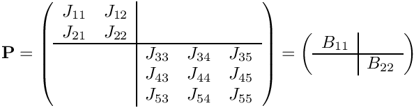
where 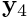 and 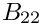 are the blocks formed from the corresponding "dof blocks" (the 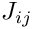 matrices). The application of this preconditioner (i.e. the solution of the linear system for ) requires the solution of the two smaller linear systems
![\[
\hspace{3cm}
\left(
\begin{array}{cc}
J_{11} & J_{12} \\
J_{21} & J_{22} \\
\end{array}
\right) \left(
\begin{array}{c}
y_1 \\
y_2 \\
\end{array}
\right) = \left(
\begin{array}{c}
z_1 \\
z_2 \\
\end{array}
\right)
\mbox{\ \ \ \ \ \ \ or \ \ \ \ \ \ }
B_{11} \ Y_1 = Z_1
\hspace{3cm}
(8)
\]](form_62.png)
and
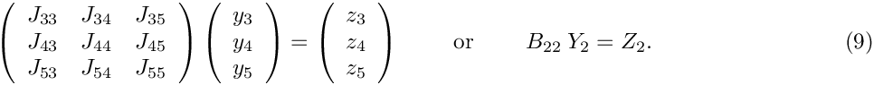
A key feature of the block preconditioning framework is the ability to combine dof types in this manner so that the preconditioner can operate directly with blocks and and the corresponding block vectors 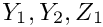 and 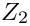.
Assuming again that the linear systems in (8) and (9) are solved exactly by a direct solver (an `‘exact preconditioner’') that can pre-compute and store the LU decomposition of the diagonal matrix blocks, and , the setup() phase involves the following operations [text in square brackets refers to their oomph-lib specific implementation]:
- Set up any data structures/lookup tables that are required to extract the matrix blocks and and the associated block vectors [by calling the
BlockPreconditioner::block_setup(...)function – this time with arguments that specify the mapping between "dof types" and "block types"]. - Extract the two diagonal blocks, and 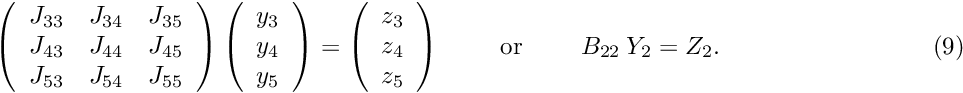 [using the
BlockPreconditioner::get_block(...)function]. - Compute and store the LU decomposition of the diagonal blocks to allow the rapid solution of the systems during the
preconditioner_solve(...)phase by back-substitution. [This is done by calling thesetup(...)function of the subsidiary preconditioner/inexact solver. Following this, the diagonal matrix blocks are longer required and can be deleted.]
Once the setup() phase has been completed, the solution of the linear system by the preconditioner_solve(...) function involves the following steps:
- Extract the two
block vectors'' \f${\bf Z}_i\f$ (for \f$i=1,2\f$) from the vector \f${\bf z}\f$ [using the \c BlockPreconditioner::get\_block\_vectors(...) function]. Solve the linear systems \f${\bf B}_{ii} \ {\bf Y}_i = {\bf Z}_i\f$ for the vectors \f${\bf Y}_i\f$ (for \f$i=1,2\f$) using the precomputed LU decomposition of the diagonal blocks \f${\bf B}_{ii}\f$ (for \f$i=1,2\f$) created during the \c setup() phase.Combine the twoblock vectors'' 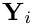 (for ) to the full-length vector [using the
) to the full-length vector [using the BlockPreconditioner::return_block_vectors(...)function].
Implementation as a BlockPreconditioner
The implementation of the preconditioner closely follows that of the block diagonal preconditioner discussed above, the main difference being that the current preconditioner only ever operates with exactly two blocks. Therefore we store pointers to the two subsidiary preconditioners (rather than a vector of pointers that can store an arbitrary number of these).
The setup() function
As usual, we start by freeing up any previously allocated memory, and set the pointer to the mesh:
Since this preconditioner assumes explicitly that the problem involves five dof types we check that this is actually the case.
To indicate that several dof types are to be combined into single blocks, we specify the mapping between dof types and block types as an argument to the block_setup(...) function This is done by creating vector of length ndof_type() in which each entry indicates the block that the corresponding dof is supposed to end up in:
To show that this actually worked, we output the number of blocks (which should be – and indeed is – equal to two).
Next we create the two subsidiary preconditioners and call their setup(...) functions, passing the two diagonal blocks 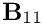 and 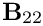 to them.
The preconditioner_solve() function
The preconditioner_solve(...) function is equivalent to that in the Diagonal preconditioner discussed above, though here it simply acts on a 2x2 block system.
The clean_up_my_memory() function
This function again deletes the allocated storage – here the subsidiary preconditioners.
Combining multiple dof types into compound blocks. Part 2: How to deal with off-diagonal blocks
NEW FEATURES: How to set up matrix vector products when multiple dof types have been combined into compound blocks
Theory
The extension of the preconditioner introduced in the previous section to block-triangular form is straightforward: We use the same dof-to-block mapping as before but now retain the off-diagonal block 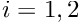 so that the preconditioner has the structure:
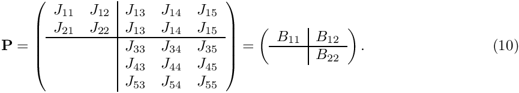
In the FSI context where and represent the solid and fluid sub-blocks, respectively, the inclusion of the off-diagonal block incorporates the effect of fluid dofs (via pressure and shear stress) onto the solid equations. Since this captures "more of the physics" the preconditioner can be expected to be better than its block diagonal counterpart.
The application of the preconditioner (i.e. the solution of the linear system for ) requires the solution of the two smaller linear systems
![\[
\ \ \ \ \
\left(
\begin{array}{cc}
J_{11} & J_{12} \\
J_{21} & J_{22} \\
\end{array}
\right) \left(
\begin{array}{c}
y_1 \\
y_2 \\
\end{array}
\right) = \left(
\begin{array}{c}
z_1 \\
z_2 \\
\end{array}
\right) - \left(
\begin{array}{ccc}
J_{13} & J_{14} & J_{15} \\
J_{23} & J_{24} & J_{25} \\
\end{array}
\right) \left(
\begin{array}{c}
y_3 \\
y_4 \\
y_5 \\
\end{array}
\right)
\mbox{\ \ \ \ \ \ \ \ \ or \ \ \ \ \ \ \ \ }
B_{11} Y_1 = Z_1 - B_{12} Y_2
\hspace{3cm}
(11)
\]](form_73.png)
and
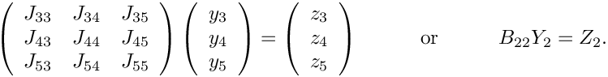
Implementation as a BlockPreconditioner
The implementation is very similar to that in the previous example – we simply provide additional storage for the (single) matrix vector product operator required for the multiplication with when updating the right-hand-side in equation (11).
The setup() function
As before, we start by freeing up any previously allocated memory and set the pointer to the mesh,
and check that the number of dof types is correct.
The block setup is again performed with a dof-to-block mapping that results in a block preconditioner with 2x2 blocks.
We create the two subsidiary preconditioners and pass the two diagonal blocks and to their setup() functions. As before, the deep copies of these matrices are then allowed to go out of scope, freeing up the memory, since the subsidiary preconditioners retain whatever information they require.
Finally we create and set up the off-diagonal vector product. Note that the block column index refers to the block enumeration, so the block column index of is 1 (in a C++ zero-based enumeration!).
The preconditioner_solve() function
The application of the preconditioner is the exact equivalent of that of the general-purpose block triangular preconditioner discussed above, restricted to a 2x2 system:
The clean_up_my_memory() function
As before, this function frees up any memory that has been allocated in the setup() function.
Using subsidiary block preconditioners
NEW FEATURES: How to use subsidiary block preconditioners to (approximately) solve linear systems constructed from subsets of dof-blocks.
Theory
The two previous examples were motivated by the observation that in multi-physics problems (such as fluid-structure interaction) it is natural to combine "related" dof blocks into compound block matrices. We showed that the block preconditioning framework makes it easy to extract such matrices from the original system matrix and demonstrated how to solve linear systems involving these matrices with separate subsidiary preconditioners.
One problem with this approach is that, once a compound matrix has been created (by the get_block(...) function), all information about its dof types is lost, making it impossible to employ block preconditioners as subsidiary preconditioners.
We will now revisit the 2x2 block triangular preconditioner described in the previous example and demonstrate how to employ subsidiary block preconditioners to (approximately) solve linear systems involving matrices formed (formally) by compound matrices that are constructed from multiple dof-level blocks. From a mathematical point of view, the structure of the preconditioner therefore remains unchanged and is given by
We will continue to use a dof-to-block mapping to view this as the 2x2 block matrix shown on the right. This makes it easy to extract the compound off-diagonal block from the system matrix when setting up the matrix-vector product (as before). The setup of the subsidiary block preconditioners used to (approximately) solve the linear systems involving and is handled differently:
- When calling the subsidiary block preconditioner's
setup(...)function we pass a pointer to the entire system matrix, i.e. the matrix containing, formally, all the dof-level blocks in equation (3).
- We then turn the preconditioner into a subsidiary block preconditioner, using its member function
turn_into_subsidiary_block_preconditioner(...)whose arguments specify which of the dof-level blocks in the current (master) preconditioner are to be used by the subsidiary block preconditioner.
The subsidiary block preconditioner is thus given access to all the information required to extract the relevant data directly from the original system matrix (and any associated full-length vectors). It is in fact a key design principle of the block preconditioning framework that subsidiary block preconditioners are given access to the "full size" matrices and vectors, but only operate on the subset of data that they are "in charge of".
When employing subsidiary block preconditioners for the approximate solution of the two smaller linear systems
![\[
\begin{array}{c}
\underbrace{
\left(
\begin{array}{cc}
J_{11} & J_{12} \\
J_{21} & J_{22} \\
\end{array}
\right)
}_{B_{11}}
\underbrace{
\left(
\begin{array}{c}
y_1 \\
y_2 \\
\end{array}
\right)
}_{Y_{1}}
=
\underbrace{
\left(
\begin{array}{c}
z_1 \\
z_2 \\
\end{array}
\right)
}_{{\bf Z}_1} -
\underbrace{
\left(
\begin{array}{ccc}
J_{13} & J_{14} & J_{15} \\
J_{23} & J_{24} & J_{25} \\
\end{array}
\right)
}_{B_{12}}
\underbrace{
\left(
\begin{array}{c}
y_3 \\
y_4 \\
y_5 \\
\end{array}
\right)
}_{{\bf Y}_2}
\\
\hspace{3cm}
(14)
\\
\underbrace{
\left(
\begin{array}{ccc}
J_{33} & J_{34} & J_{35} \\
J_{43} & J_{44} & J_{45} \\
J_{53} & J_{54} & J_{55} \\
\end{array}
\right)
}_{B_{22}}
\underbrace{
\left(
\begin{array}{c}
y_3 \\
y_4 \\
y_5 \\
\end{array}
\right)
}_{{\bf Y}_2}
=
\underbrace{
\left(
\begin{array}{c}
z_3 \\
z_4 \\
z_5 \\
\end{array}
\right)
}_{{\bf Z}_2},
\end{array}
\]](form_76.png)
the subsidiary preconditioners that operate on the linear systems involving and therefore retain access to the relevant dof-level blocks. Hence, if we employ the block triangular preconditioner discussed above to (approximately) solve the two linear systems in equation (14), the complete preconditioning operation is described by the following equations:
![\[
\begin{array}{c}
\left(
\begin{array}{cc}
J_{11} & J_{12} \\
& J_{22} \\
\end{array}
\right)
\left(
\begin{array}{c}
y_1 \\
y_2 \\
\end{array}
\right)
=
\underbrace{
\underbrace{
\left(
\begin{array}{c}
z_1 \\
z_2 \\
\end{array}
\right)
}_{{\bf Z}_1}
-
\underbrace{
\left(
\begin{array}{ccc}
J_{13} & J_{14} & J_{15} \\
J_{23} & J_{24} & J_{25} \\
\end{array}
\right)
}_{B_{12}}
\underbrace{
\left(
\begin{array}{c}
y_3 \\
y_4 \\
y_5 \\
\end{array}
\right)
}_{{\bf Y}_2}
}_{\widehat{\bf Z}_1}
\\
\left(
\begin{array}{ccc}
J_{33} & J_{34} & J_{35} \\
& J_{44} & J_{45} \\
& & J_{55} \\
\end{array}
\right) \left(
\begin{array}{c}
y_3 \\
y_4 \\
y_5 \\
\end{array}
\right) = \left(
\begin{array}{c}
z_3 \\
z_4 \\
z_5 \\
\end{array}
\right).
\end{array}
\]](form_77.png)
Note that when we wrote the block triangular preconditioner we did not have to be aware of the fact that it may subsequently be used as a subsidiary block preconditioner. The internal data structures implemented in the BlockPreconditioner base class ensure that when we call get_block(0,0,block_matrix) in the subsidiary block preconditioner acting on , block_matrix will receive a deep copy of , extracted from the full system matrix. Similarly, a call to get_block_vectors(r,block_r) will extract the three block vectors and from the full-length vector , while return_block_vectors(block_z,z) will return the three solution vectors and to the appropriate entries in the full-length vector
The implementation of the preconditioning operations can again be subdivided into two distinct setup() and preconditioner_solve(...) phases.
- Set up the data structures/lookup tables that map dof types 0 and 1 to block 0 and dof types 2, 3 and 4 to block 1 [by calling the
BlockPreconditioner::block_setup(...)function with arguments that specify the mapping between "dof types" and "block types" as before]. - Create two instances of the block triangular preconditioner (or any other block preconditioner) and turn them into the subsidiary preconditioners for the current (master) preconditioner, specifying which dof types in the master preconditioner the subsidiary block preconditioners are to work with.
- Extract the compound off-diagonal block and create a
MatrixVectorProductoperator.
Once the setup() phase has been completed, the solution of the linear system by the preconditioner_solve(...) function involves the following steps:
- Solve the linear systems using the subsidiary block preconditioner that works with . [The subsidiary block preconditioner's
preconditioner_solve(...)function is given access to the full-size vectors and and extracts/returns and directly from/into these.] - Extract the solution vector
 from the just undated full-length vector , perform the matrix vector product with and store the result in a temporary vector .
from the just undated full-length vector , perform the matrix vector product with and store the result in a temporary vector . - Extract the block vector from the full-length vector , subtract from it, and return the result,
 into the appropriate entries into the full-length vector .
into the appropriate entries into the full-length vector . - Solve the linear systems using the subsidiary block preconditioner that works with . [The subsidiary block preconditioner's
preconditioner_solve(...)function is given access to the full-size vectors and and extracts/returns and directly from/into these; recall that the relevant entries in have been over-written in the previous step so that contains the updated right hand side.]
have been over-written in the previous step so that contains the updated right hand side.]
Implementation as a BlockPreconditioner
The implementation of the preconditioner is completely equivalent to the corresponding block triangular preconditioner considered in the previous example:
The setup() function
As usual we free up any memory and set the pointer to the mesh:
We check that the number of dof types is appropriate for this preconditioner:
Next we define the block structure of the preconditioner, using a dof-to-block mapping to combine dofs 0 and 1 into block 0, and dofs 2, 3 and 4 into block 1:
Next we create the block triangular preconditioner used to (approximately) solve linear systems involving the compound "top left" 2x2 block:
Next we specify the pointer to the mesh that contains the elements that classify the degrees of freedom. We note, that, strictly speaking this is not necessary since the preconditioner will only be used as a subsidiary preconditioner – the enumeration of the dof types is always handled by the top-most master preconditioner. One (or more) mesh pointers must be set for the master preconditioner, and, if compiled in PARANOID mode, oomph-lib will throw an error if this is not done. Some (but not all!) oomph-lib developers regard it as "good practice" to set the mesh pointer anyway, so one is less likely to forget...
We turn this preconditioner into a subsidiary block preconditioner, specifying the pointer to the current (master) preconditioner and the mapping between dof types in the present and the subsidiary block preconditioners (here the identity):
When calling the subsidiary block preconditioners setup(...) function we pass a pointer to the full matrix:
The second subsidiary block preconditioner (for the 3x3 "bottom right" compound matrix) is created similarly, though the mapping between dof-types is now no longer the identity but maps dof types 2, 3 and 4 in the current (master) preconditioner to dof types 0, 1 and 2 in the subsidiary block preconditioner:
The setup of the matrix-vector product with the off-diagonal matrix is unchanged from the previous example:
The preconditioner_solve() function
As discussed in the theory section, we start by (approximately) solving the system , using the second subsidiary block preconditioner which automatically extracts from the full length vector z and returns the result  into the appropriate entries of the full length vector
into the appropriate entries of the full length vector y.
We now extract the block vector from the full-length vector y,
multiply it by , using the MatrixVectorProduct operator,
and subtract the result from (which we extract from the full length vector z ):
block_z now contains the updated right hand side, , for the linear system to be (approximately) solved by the first subsidiary block preconditioner. We therefore return to the appropriate entries into a full length vector of the same size as right hand side vector z:
We then pass this vector to first subsidiary preconditioner which updates the appropriate entries in the full-length solution vector y which can therefore be returned directly by this function:
The clean_up_my_memory() function
As usual, we use this helper function to free up any memory allocated in the setup() function to avoid memory leaks.
Replacing/modifying blocks
NEW FEATURES: How to replace/modify matrix blocks
Theory
So far, we have demonstrated how to extract matrix blocks from the full-sized system matrix (typically the Jacobian matrix used in Newton's method) and how to apply a preconditioner via operations involving these blocks. Many preconditioners do not operate directly with the matrix blocks themselves, but on matrices that are derived from them. For instance, oomph-lib's Schur complement Navier-Stokes preconditioner operates on an (approximate) Schur complement; augmentation preconditioners involve operations on matrices that are obtained by the addition of a diagonal matrix to some of the matrix blocks; etc. Within a given preconditioner such derived matrices are typically pre-computed by the preconditioner's setup() function and then stored as private member data which makes them available to the preconditioner_solve() function. Unfortunately, this approach does not work if the modified block is to be used in a subsidiary block preconditioner because, as discussed in the previous example, by default the subsidiary block preconditioner will extract its block matrices directly from the full-size system matrix and will therefore ignore any (local) modifications made by its master preconditioner(s). What is therefore required is a method that indicates to the block preconditioning framework that a given sub-block is not to be extracted from the full system matrix but to be represented by suitable replacement matrix.
We demonstrate this methodology by re-visiting the preconditioner considered in the previous example, namely
However, here we want to modify the off-diagonal blocks by "replacing" each block  (for ) by a "replacement matrix" so that the preconditioner becomes
(for ) by a "replacement matrix" so that the preconditioner becomes
The application of this preconditioner (i.e. the solution of the linear system for ) still requires the solution of the two smaller linear systems
![\[
\begin{array}{c}
\underbrace{
\left(
\begin{array}{cc}
J_{11} & R_{12} \\
R_{21} & J_{22} \\
\end{array}
\right)
}_{B_{11}}
\left(
\begin{array}{c}
y_1 \\
y_2 \\
\end{array}
\right) = \left(
\begin{array}{c}
z_1 \\
z_2 \\
\end{array}
\right) -
\underbrace{
\left(
\begin{array}{ccc}
R_{13} & R_{14} & R_{15} \\
R_{23} & R_{24} & R_{25} \\
\end{array}
\right)
}_{B_{12}}
\left(
\begin{array}{c}
z_3 \\
z_4 \\
z_5 \\
\end{array}
\right)
\\
\hspace{3cm}
(17)
\\
\underbrace{
\left(
\begin{array}{ccc}
J_{33} & R_{34} & R_{35} \\
R_{43} & J_{44} & R_{45} \\
R_{53} & R_{54} & J_{55} \\
\end{array}
\right)
}_{B_{22}}
\left(
\begin{array}{c}
y_3 \\
y_4 \\
y_5 \\
\end{array}
\right) = \left(
\begin{array}{c}
z_3 \\
z_4 \\
z_5 \\
\end{array}
\right)
\end{array}
\]](form_111.png)
where we have again assumed that the two vectors and are re-ordered into block vectors'' in the same way as the vectors \f$\delta {\bf x}\f$ and \f${\bf r}\f$ in "the original linear system" (3) are re-ordered into theblock vectors'' in (17). We wish to continue to solve the linear systems involving the compound matrices and (which involve "replaced" blocks) by two subsidiary block preconditioners (which operate on 3x3 and 2x2 dof blocks, respectively).
In the specific example below we replace all of the diagonal matrices by suitably sized zero matrices, so that the actual preconditioning operation is defined by the following linear systems
![\[
\begin{array}{c}
\underbrace{
\left(
\begin{array}{cc}
J_{11} & \\
& J_{22} \\
\end{array}
\right)
}_{B_{11}}
\left(
\begin{array}{c}
y_1 \\
y_2 \\
\end{array}
\right) = \left(
\begin{array}{c}
z_1 \\
z_2 \\
\end{array}
\right) -
\underbrace{
\left(
\begin{array}{ccc}
& & \\
& & \\
\end{array}
\right)
}_{B_{12}}
\left(
\begin{array}{c}
z_3 \\
z_4 \\
z_5 \\
\end{array}
\right)
\\
\underbrace{
\left(
\begin{array}{ccc}
J_{33} & & \\
& J_{44} & \\
& & J_{55} \\
\end{array}
\right)
}_{B_{22}}
\left(
\begin{array}{c}
y_3 \\
y_4 \\
y_5 \\
\end{array}
\right) = \left(
\begin{array}{c}
z_3 \\
z_4 \\
z_5 \\
\end{array}
\right)
\end{array}
\]](form_113.png)
which, in effect, turns the preconditioner into the block-diagonal preconditioner considered at the very beginning of this tutorial.
Implementation as a BlockPreconditioner
The implementation of the preconditioner is completely equivalent to the preconditioner considered in the previous example. The only additional feature is the provision a matrix of pointers to the replacement matrices, Replacement_matrix_pt.
The setup() function
As usual, we start by cleaning up any memory using a call to a clean_up_my_memory() function, and set the pointer to the mesh
Next we check that the number of dof types is 5, as the preconditioner is designed to only work for that number.
The block setup follows exactly the same pattern as in the previous example: Dof types 0 and 1 are combined into compound block 0, while dof types 2, 3 and 4 are combined into compound block 1.
On return from the block setup function we should therefore have two block types:
Now we perform the replacement of the off-diagonal dof blocks. (Note that there are still five of these. Dof-blocks and compound blocks are not the same – if you get them confused you will get into trouble!). We allocate storage for the pointers to the replacement matrices and loop over the off-diagonal blocks:
Given that the replacement matrices are zero matrices, we could simply create them without ever looking at the original blocks. Sadly the creation of zero matrices turns out to be slightly more painful than one would wish because they have to be created as a (possibly distributed) CRDoubleMatrix. The relevant code is contained in the source code but we won't discuss it here since the more common situation is one where we actually want to modify the already existing entries of an already existing block matrix. Therefore we simply extract the matrix and set its initially nonzero entries to zero (admittedly a bit silly – we now have a sparse matrix full of zeroes, but it's just a demonstration!):
We then pass the pointer to the replacement dof block to the block preconditioner
The rest of the setup works exactly as in the previous example, only this time, the subsidiary preconditioners and the matrix vector products will work with the replacement dof blocks that we've just defined.
We create and set up the first subsidiary block preconditioner which operates on our dof types 0 and 1 (and treats them as its own dof types 0 and 1):
The second subsidiary block preconditioner which operates on our dof types 2, 3 and 4 (and treats them as its own dof types 0, 1 and 2):
Finally, we create the matrix vector product operator:
The preconditioner_solve() function
The preconditioner_solve() function is completely identical to the one used in the previous preconditioner, so we omit the code listing – the subsidiary preconditioners and the matrix vector product operator work in the same way but now simply operate on the replacement dof blocks where they have been set.
The clean_up_my_memory() function
Memory is cleaned up as before, so we omit the code listing.
Coarsening/combining dof types
NEW FEATURES: How to coarsen/combine dof types for use by subsidiary block preconditioners.
Theory
In the examples presented so far we have demonstrated how to combine various dof-blocks into compound blocks in order to facilitate the application of certain preconditioning operations. For instance, in many of the previous examples we performed a matrix vector product using the compound matrix that was (formally) formed by the concatenation of the 2x3 "top right" off-diagonal dof blocks in the full-sized system.
We also showed how subsidiary block preconditioners which operate on a specific number of dof blocks can be instructed to operate on selected dof types from the full-sized system. Our standard example for this was a 2D Navier-Stokes preconditioner which operates on three dof types (two fluid velocities and one pressure) and is used as a subsidiary block preconditioner in an FSI problem that also involves additional dofs associated with the solid mechanics (e.g. the two solid displacement components). This was done by informing the subsidiary preconditioner which of the dof types in the full-sized system to regard as "its own" when calling its turn_into_subsidiary_block_preconditioner(...) function. This implies that the subsidiary block preconditioner remains unaware of any compound blocks that may have been formed in its master preconditioner. The functionality presented so far only allows us to associate dof-blocks in the master preconditioner with dof blocks in the subsidiary block preconditioner. It is therefore not possible (without further functionality which we explain in this example) to use a subsidiary block preconditioner if the dof-types in the master preconditioner are "too fine-grained". This arises, for instance, in Navier-Stokes problems where the master preconditioner sub-divides the two components of the fluid velocity into degrees of freedom on the domain boundary and those in the interior. It is then necessary to make the subsidiary preconditioner act on the combined dof types, a process that we describe as "coarsening".
We illustrate the procedure by returning, yet again, to our 5x5 block linear system that we wish to precondition with
![\[
\hspace{3cm}
{\bf P}_{\rm previous} =
\left(
\begin{array}{cc|ccc}
J_{11} & J_{12} & J_{13} & J_{14} & J_{15} \\
J_{21} & J_{22} & J_{13} & J_{14} & J_{15} \\
\hline
& & J_{33} & J_{34} & J_{35} \\
& & J_{43} & J_{44} & J_{45} \\
& & J_{53} & J_{54} & J_{55} \\
\end{array}
\right) =
\left(
\begin{array}{c|c}
B_{11} & B_{12}\\
\hline
& B_{22} \\
\end{array}
\right).
\hspace{3cm}
(18)
\]](form_114.png)
However, now we wish to solve the two linear systems involving the compound matrices and with a 2x2 upper triangular subsidiary block preconditioner. To make this possible, we "coarsen" the dof types such that the subsidiary block preconditioner acting on treats the global dof types 3 and 4 as a single dof type so that the block structure can be viewed as
![\[
{\bf P} =
\left(
\begin{array}{c||c}
\begin{array}{cc}
J_{11} & J_{12} \\
J_{21} & J_{22} \\
\end{array} &
\begin{array}{ccc}
J_{13} & J_{14} & J_{15} \\
J_{23} & J_{24} & J_{25} \\
\end{array} \\
\hline
\hline
&
\begin{array}{cc|c}
J_{33} & J_{34} & J_{35} \\
J_{43} & J_{44} & J_{45} \\
\hline
J_{53} & J_{54} & J_{55} \\
\end{array}
\end{array}
\right) =
\left(
\begin{array}{c|c}
B_{11} & B_{12}\\
\hline
& B_{22} \\
\end{array}
\right).
\hspace{3cm}
(19)
\]](form_115.png)
If we now use a 2x2 upper triangular block preconditioner to (approximately) solve the linear systems involving the diagonal blocks and the preconditioner is given (mathematically) by
[Note that, In the actual implementation discussed below, we also set the off diagonal dof-blocks to zero, using the replacement methodology discussed in the previous example. The preconditioner therefore becomes mathematically equivalent to the block diagonal preconditioner discussed at the very beginning of this tutorial.]
Implementation as a BlockPreconditioner
The implementation of the preconditioner is completely equivalent to the preconditioner considered in the previous examples:
The setup() function
As usual we clean up any previously allocated memory and set the pointer to the mesh:
Next we check that the number of degrees of freedom is 5, as the preconditioner is designed to only work for that number.
The block setup follows exactly the same pattern as in the previous examples: Dof types 0 and 1 are combined into compound block 0, while dof types 2, 3 and 4 are combined into compound block 1.
[We omit the code listing the replacement of the off-diagonal dof blocks with zero matrices since it is identical to what we already discussed in the previous example.]
Next we create the two subsidiary preconditioners that (approximately) solve the linear systems involving the diagonal blocks and . The first subsidiary preconditioner is a standard upper triangular block preconditioner which acts on the compound block formed by dof types 0 and 1:
The second subsidiary preconditioner is more interesting. It's a block preconditioner that only operates on a 2x2 block system, yet we want to use it to solve the linear system involving the compound block formed the three dof types 2, 3 and 4. To do this we wish to combine the dof blocks associated with dof types 2 and 3 into a single block. We start by setting the mesh pointer and by setting up the usual mapping that identifies the dof types (in the current preconditioner) that we wish the subsidiary preconditioner to act on.
To combine/coarsen dof types 2 and 3 (in the current preconditioner) into a single dof type for the subsidiary preconditioner we create a vector of vectors, doftype_coarsening whose entries are to be interpreted as
doftype_coarsening[coarsened_dof_type][i]=dof_type
where i ranges from 0 to the number of dof types (minus one, because of the zero-based indexing...) in the enumeration of the subsidiary preconditioner that are to be combined/coarsened into dof type coarsened_dof_type:
We pass both lookup schemes to the function that turns the preconditioner into a subsidiary block preconditioner and then call its own setup function, as usual.
Finally, we set up the of diagonal matrix-vector product which acts on the compound (0,1) block (formed from dof types {0,1}x{2,3,4}) in the current preconditioner.
The preconditioner_solve() function
The preconditioner_solve() function is completely identical to the one used in the previous example, so we omit the code listing.
The clean_up_my_memory() function
Memory is cleaned up as before, so we omit the code listing.
Using multiple meshes – explained for a genuine fluid-structure interaction problem
NEW FEATURES: How to use multiple meshes
Theory
Finally, we demonstrate the use of multiple meshes by discussing a simple implementation of the FSI preconditioner described in the FSI Preconditioner Tutorial. We refer to the tutorial discussing the FSI channel with leaflet problem for the overall problem setup.
FSI problems involve fluid (velocities and pressures from the Navier-Stokes equations) and solid (the nodal positions in the solid domain) degrees of freedom (dofs). We begin by reordering the linear system to group together the two types of dof
where and denote the fluid and solid dofs, is the Navier-Stokes Jacobian (representing the derivatives of the discretised fluid equations with respect to the fluid dofs), is the solid Jacobian, and the blocks and arise from the interaction between fluid and solid equations.
The Navier Stokes Jacobian has its own block structure. Decomposing the fluid dofs into velocity and pressure dofs so that
we obtain the well known saddle-point structure of
where  is the momentum block, the discrete gradient operator, and the discrete divergence operator (see Navier Stokes Preconditioner Tutorial).
is the momentum block, the discrete gradient operator, and the discrete divergence operator (see Navier Stokes Preconditioner Tutorial).
This FSI preconditioner takes the form of a block triangular preconditioner. Here we only consider the lower block triangular version
obtained by omitting the block from the Jacobian.
The application of the preconditioner requires the solution of the linear system
However, for preconditioning purposes this system does not have to be solved exactly. We therefore replace the solution of the linear systems involving the diagonal blocks (representing the single-physics fluid and solid Jacobians and ) by existing preconditioners (interpreted as inexact solvers). Formally, we write this as
where is the fluid preconditioner and  the solid preconditioner, both used as subsidiary preconditioners.
the solid preconditioner, both used as subsidiary preconditioners.
The application of the preconditioner can be accomplished in four distinct steps:
- Apply the fluid preconditioner to the fluid dofs of the RHS vector and store the result in the fluid solution .
- Multiply the fluid-solid coupling matrix with the fluid solution and store the result in the temporary vector .
- Subtract from the solid dofs of the RHS vector and store the result in the temporary to complete the action of the matrix vector product, .
- Apply the solid preconditioner to the temporary to compute the solid solution .
This is, of course, extremely similar to the methodology explained in the section Using subsidiary block preconditioners, the main difference being that the fluid and solid dofs are classified by two different elements. In the two-dimensional FSI channel with leaflet problem these are:
- The fluid elements are of type
RefineableQTaylorHoodElement<2>. These elements have three types of dof;-velocity dofs are labelled 0,-velocity dofs are labelled 1and the pressure dofs are labelled2.
- The solid elements are of type
FSIHermiteBeamElement.
They have one type of dof (the nodal position) labelled0.
When classifying the dofs we specify the elements via two separate meshes, the first one containing the pointers to the fluid elements, the second one the pointers to the solid elements. This means that in the global enumeration of the dof types the fluid dofs appear before the solid dofs.
The Implementation of the FSI Preconditioner
We implement the FSI preconditioner in the class SimpleFSIPreconditioner. This class inherits from the base class BlockPreconditioner which provides the generic functionality required for common block preconditioning operations.
The overall structure of the class is similar to that of the preconditioners considered before, the main difference being that we now store pointers to two meshes.
Preconditioner Setup
We start by setting up the meshes, choosing the fluid mesh to be mesh 0 and the solid mesh to be mesh 1. The preconditioner therefore has four dof types enumerated in mesh order:
0fluid velocity (dof type 0 in mesh 0)1fluid velocity (dof type 1 in mesh 0)2fluid pressure (dof type 2 in mesh 0)3solid (dof type 0 in mesh 1)
Next we define the mapping from dof number to block number. The preconditioner has two block types – fluid and solid – therefore we group the fluid dofs into block type 0 and the solid dofs into block type 1. We define a map from dof type to block type in a vector (the vector indices denote the dof type and the vector elements denote the block type) and pass it to block_setup(...) to complete the setup of the BlockPreconditioner infrastructure.
Next we set up the subsidiary operators required by the preconditioner. We start with the solid subsidiary preconditioner ( ). We extract the solid matrix block from the Jacobian using the BlockPreconditioner method get_block(...) and then set up the solid subsidiary preconditioner:
Note that, compared to the previous examples, we have used an alternative, pointer-based version of the get_block(...) function. However, as before, the block matrix can be deleted once the subsidiary preconditioner has been set up since the latter retains whatever data it requires.
The fluid subsidiary preconditioner ( ) a block preconditioner itself. Its setup is therefore performed in two steps:
- First we turn the
NavierStokesSchurComplementPreconditionerinto a subsidiary block preconditioner. We assemble a list a fluid dof types in the current (master) preconditioner, and pass this list to the Navier-Stokes preconditioner to indicate that dof typeiin the master FSI preconditioner is dof typeiin the subsidiary fluid preconditioner (fori=0,1,2) (Note that the fact that this mapping is the identity mapping is a result of choosing the fluid mesh to be mesh0; in general the index ofns_dof_listcorresponds to the dof type number in the Navier Stokes subsidiary preconditioner and the value corresponds to the index in this master preconditioner).// Next the fluid preconditioner//==============================// Specify the relationship between the enumeration of DOF types in the// master preconditioner and the Schur complement subsidiary preconditioner// so that ns_dof_type[i_nst] contains i_masterVector<unsigned> ns_dof_list(n_fluid_dof_type);for (unsigned i = 0; i < n_fluid_dof_type; i++){ns_dof_list[i] = i;}// Turn the NavierStokesSchurComplement preconditioner into a subsidiary// preconditioner of this (FSI) preconditionerNavier_stokes_preconditioner_pt->turn_into_subsidiary_block_preconditioner(this,ns_dof_list); - Next we set up the
NavierStokesSchurComplementPreconditioner. We pass the Navier-Stokes mesh to the the subsidiary preconditioner and set up the preconditioner. Note that the pointer to the full FSI Jacobian is passed to the subsidiary block preconditioner. This allows the subsidiary preconditioner to extract the relevant sub-blocks, using the lookup schemes established by the call toturn_into_subsidiary_block_preconditioner(...).Finally, we set up is the matrix-vector product. This mirrors the set up of the solid subsidiary preconditioner. First the subsidiary matrix is extracted from the Jacobian and then the operator is set up:// Set up the NavierStokesSchurComplement preconditioner.// (Pass it a pointer to the Navier Stokes mesh)Navier_stokes_preconditioner_pt->set_navier_stokes_mesh(Navier_stokes_mesh_pt);// Navier Stokes preconditioner is a subsidiary block preconditioner.// It therefore needs a pointer to the full matrix.Navier_stokes_preconditioner_pt->setup(this->matrix_pt());
Again, the extracted block can be deleted since the matrix vector product operator retains the relevant data. The FSI preconditioner is now ready to be used.
Preconditioner Solve
The preconditioner_solve(...) method applies
the preconditioner to the input vector and returns the result in .
We start by applying the Navier-Stokes preconditioner to the fluid elements y_f of y. Since is a subsidiary block preconditioner we apply it to the full-length y and z vectors which contain both the fluid and solid unknowns. The block preconditioning infrastructure utilised within the NavierStokesSchurComplementPreconditioner will ensure that the preconditioner only operates on fluid dofs.
The fluid elements z_f of the vector z will now have been updated to contain the action of the SchurComplement preconditioner on the fluid elements y_f of the vector y.
To apply the fluid-solid coupling matrix vector product , we copy the fluid elements from z into another vector z_f. We then apply the matrix-vector product operator to z_f and store the result in a vector w. Finally, we subtract w from the solid residuals y_s and store the result in w to complete the application of the matrix-vector product.
Finally, we apply the solid subsidiary preconditioner to w and return the result to z. We note that because the solid subsidiary preconditioner is not a block preconditioner, the preconditioner solve method must be called with the solid block vectors. The result is then copied to the full-length vector z which contains the fluid and solid dofs.
Parallelisation
We note that the above discussion did not address the parallelisation of the preconditioners. This is because all the required parallel features are "hidden" within the block preconditioning framework which relies heavily on the library's distributed linear algebra infrastructure. Any of the preconditioners discussed in this tutorial can therefore be used without change when oomph-lib is compiled with MPI support and if the the executable is run on multiple processes.
Source files for this tutorial
- The source file for the simple block diagonal preconditioner for the linear elasticity problem is
demo_drivers/linear_solvers/simple_block_preconditioners.h
- The driver code demonstrating the use of the simple block diagonal preconditioner for the linear elasticity problem is
demo_drivers/linear_solvers/two_d_linear_elasticity_with_simple_block_diagonal_preconditioner.cc
- The source files for the "multi-poisson" preconditioners and the serial driver codes are located in the directory:
demo_drivers/linear_solvers/
- The serial "multi-poisson" driver code (which demonstrates the use of the various "multi-poisson" preconditioners discussed above) is:
demo_drivers/poisson/two_d_multi_poisson.cc
- The parallel counterpart is here (note that, as claimed, this code uses exactly the same preconditioners as the serial version):
demo_drivers/mpi/solvers/two_d_multi_poisson.cc
- The (parallel) driver code which demonstrates the implementation and use of the simple FSI preconditioner (for the "channel with leaflet" problem) is here:
demo_drivers/mpi/solvers/fsi_channel_with_leaflet.cc
PDF file
A pdf version of this document is available. \